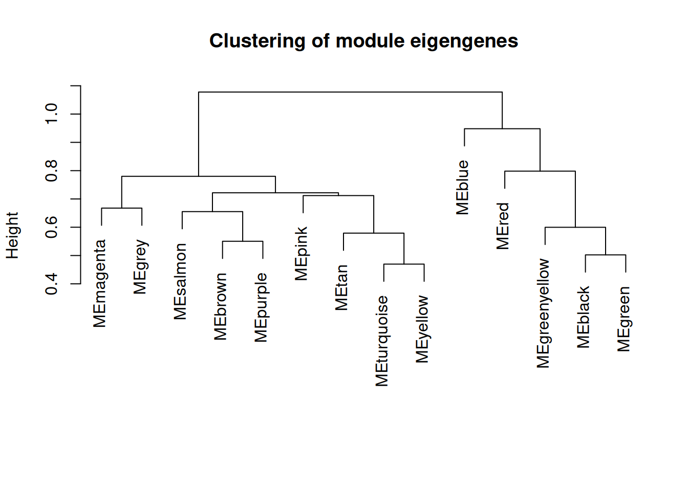

Appendix A — Microbe Set Enrichment Analysis (MSEA)
Similar to gene set enrichment analyses for genes (Subramanian et al. 2005), an obvious next step following differential abundance analysis in microbiome studies is to conduct enrichment analysis for microbe sets, known as microbe set enrichment analysis (MSEA) (Kou et al. 2020). Similar to GSEA, the primary goal of MSEA is to detect the modest but coordinated changes in pre-specified sets of related microbial features. Such a set might include all the microbes in a specific pathway or microbial genes that have been shown to be co-regulated based on previously published studies. Like GSEA, MSEA aggregates the per-feature statistics across microbes within a microbe set. This corresponds to the hypothesis that many relevant phenotype differences are manifested by small but consistent changes in a set of features.
The goal of the MSEA approach is to determine if the members of S (microbe set) are randomly distributed throughout the ranked list of features (L) or primarily found at the top or bottom. We will use the R package gsEasy to conduct the MSEA test described by Subramanian et al. (2005).
A.1 Input data for MSEA using species relative abundance data
In this chapter, we will use the publicly available Inflammatory Bowel Diseases (IBD) microbiome data from the integrative Human Microbiome Project (iHMP) available from the curatedMetagenomicData package (Lloyd-Price et al. 2019). We aim to conduct MSEA analysis based on both taxonomic profiles (species relative abundances) and functional profiles (pathway relative abundances).
A.2 Performing the MSEA analysis with species relative abundance data
We will first prepare the input feature table and sample metadata for differential abundance analysis using MaAsLin2 (Mallick et al. 2021). The ranked feature list from the differential abundance analysis serves as an input for the MSEA.
##################
# Load iHMP data #
##################
library(curatedMetagenomicData)
library(dplyr)
se_relative <- sampleMetadata |>
filter(study_name == "HMP_2019_ibdmdb") |>
returnSamples("relative_abundance", rownames = "short")
##########################
# Create sample metadata #
##########################
sample_metadata <-
colData(se_relative) |>
as.data.frame() |> filter(visit_number == 1) |>
dplyr::select(c("age", "disease", "antibiotics_current_use"))
#################
# Set reference #
#################
sample_metadata$disease <- as.factor(sample_metadata$disease)
sample_metadata$disease <- relevel(sample_metadata$disease, 'healthy')
###########################
# Create species features #
###########################
feature_species_t <- as.data.frame(assay(se_relative))
rownames(feature_species_t) <- sub('.*s__', '', rownames(feature_species_t))
##############################
# Subset to baseline samples #
##############################
feature_species <- as.data.frame(t(feature_species_t))
feature_species <- feature_species[rownames(sample_metadata),]
feature_species <- feature_species / 100
rm(feature_species_t); rm(se_relative)In the next step, we will use MaAsLin2 to fit a multivariable regression model for testing the association between microbial species abundance versus IBD diagnosis. The analysis method we use here is “LM”, which is the default setting. We also adjust for age and antibiotic usage, following the original study.
library(Maaslin2)
fit_data = Maaslin2(
input_data = feature_species,
input_metadata = sample_metadata,
normalization = "NONE",
output = "output_species",
fixed_effects = c("disease", "age", "antibiotics_current_use"))
## [1] "Creating output folder"
## [1] "Creating output feature tables folder"
## [1] "Creating output fits folder"
## [1] "Creating output figures folder"
## 2025-09-06 19:09:02.883425 INFO::Writing function arguments to log file
## 2025-09-06 19:09:02.898552 INFO::Verifying options selected are valid
## 2025-09-06 19:09:02.924852 INFO::Determining format of input files
## 2025-09-06 19:09:02.925445 INFO::Input format is data samples as rows and metadata samples as rows
## 2025-09-06 19:09:02.931721 INFO::Formula for fixed effects: expr ~ disease + age + antibiotics_current_use
## 2025-09-06 19:09:02.932428 INFO::Factor detected for categorial metadata 'disease'. Provide a reference argument or manually set factor ordering to change reference level.
## 2025-09-06 19:09:02.933069 INFO::Filter data based on min abundance and min prevalence
## 2025-09-06 19:09:02.933559 INFO::Total samples in data: 136
## 2025-09-06 19:09:02.934008 INFO::Min samples required with min abundance for a feature not to be filtered: 13.600000
## 2025-09-06 19:09:02.939995 INFO::Total filtered features: 458
## 2025-09-06 19:09:02.940734 INFO::Filtered feature names from abundance and prevalence filtering: species.Clostridiales.bacterium.1_7_47FAA, species.Enterocloster.asparagiformis, species.Gordonibacter.pamelaeae, species.Firmicutes.bacterium.CAG.424, species.Adlercreutzia.equolifaciens, species.Adlercreutzia.equolifaciens_1, species.Anaerotruncus.sp..CAG.528, species.Parabacteroides.johnsonii, species.Erysipelothrix.larvae, species.Proteus.mirabilis, species.Bacteroides.sp..43_108, species.Blautia.producta, species.Tyzzerella.nexilis, species.Ruminococcus.obeum.CAG.39, species..Clostridium..scindens, species.Blautia.hydrogenotrophica, species.Lachnoclostridium.sp..An181, species.Candidatus.Stoquefichus.sp..KLE1796, species.Gemmiger.sp..An87, species.Lachnoclostridium.sp..An138, species.Harryflintia.acetispora, species.Streptococcus.thermophilus, species.Prevotella.buccae, species.Dorea.sp..CAG.317, species.Proteus.vulgaris, species.Proteus.hauseri, species..Clostridium..spiroforme, species.Blautia.hansenii, species.Eubacterium.sp..OM08.24, species.Parabacteroides.sp..CAG.409, species.Desulfovibrio.piger, species.Clostridium.sp..CAG.242, species.Pseudoflavonifractor.sp..An184, species.Clostridiales.bacterium.CHKCI006, species.Pseudoflavonifractor.sp..An85, species.Christensenella.minuta, species.Bifidobacterium.catenulatum, species.Slackia.isoflavoniconvertens, species.Alistipes.inops, species.Haemophilus.pittmaniae, species.Amedibacillus.dolichus, species.Eubacterium.dolichum.CAG.375, species.Turicibacter.sanguinis, species.Lactobacillus.delbrueckii, species.Aeriscardovia.aeriphila, species.Firmicutes.bacterium.CAG.145, species.Klebsiella.quasipneumoniae, genus.Enterobacter, species.Cutibacterium.granulosum, genus.Pseudomonas, species.Methanobrevibacter.smithii, species.Porphyromonas.asaccharolytica, species.Clostridium.perfringens, species.Clostridium.paraputrificum, species.Limosilactobacillus.fermentum, species.Prevotella.sp..CAG.279, species.Fusobacterium.ulcerans, species.Bifidobacterium.breve, species.Prevotella.sp..CAG.891, species.Lactococcus.piscium, species.Klebsiella.oxytoca, species.Citrobacter.freundii, species.Citrobacter.braakii, species.Bifidobacterium.animalis, species.Citrobacter.youngae, species.Lactobacillus.acidophilus, species.Anaeroglobus.geminatus, species.Bifidobacterium.dentium, species.Clostridium.neonatale, species.Clostridioides.difficile, species.Enterococcus.faecium, species.Morganella.morganii, species.Streptococcus.oralis, species.Klebsiella.michiganensis, species.Clostridium.sp..chh4.2, species.Bacteroides.nordii, species.Klebsiella.aerogenes, species.Leclercia.adecarboxylata, species.Enterobacter.mori, species.Kluyvera.ascorbata, species.Pseudoflavonifractor.capillosus, species.Ruminococcaceae.bacterium.D5, species.Raoultella.planticola, species.Roseburia.sp..CAG.303, species.Alloscardovia.omnicolens, species.Eubacterium.sp..CAG.180, species.Eubacterium.sp..CAG.274, species.Cutibacterium.acnes, species.Dialister.sp..CAG.357, species.Bacteroides.oleiciplenus, species.Coprobacter.secundus, species.Kocuria.palustris, species.Acinetobacter.lwoffii, species.Micrococcus.lylae, species.Pararheinheimera.mesophila, species.Desulfovibrionaceae.bacterium, species.Massilimicrobiota.timonensis, species.Fretibacterium.fastidiosum, species.Streptococcus.vestibularis, species.Clostridium.sp..CAG.411, species.Megamonas.funiformis, species.Megamonas.hypermegale, species.Megamonas.funiformis.CAG.377, species.Streptococcus.gordonii, species.Coprobacillus.cateniformis, species.Prevotella.colorans, species.Prevotella.buccalis, species.Anaerofustis.stercorihominis, species.Latilactobacillus.sakei, species.Clostridium.disporicum, species.Ruminococcus.sp..CAG.330, species.Streptococcus.agalactiae, species.Aggregatibacter.segnis, species.Fusobacterium.nucleatum, species.Bifidobacterium.pseudolongum, species.Allisonella.histaminiformans, species.Prevotella.bivia, species.Clostridium.sp..CAG.590, species.Ruminococcus.callidus, species.Holdemanella.biformis, species.Escherichia.marmotae, species.Terrisporobacter.othiniensis, species.Porphyromonas.somerae, species.Prevotella.salivae, species.Citrobacter.amalonaticus, species.Ligilactobacillus.salivarius, species.Megasphaera.micronuciformis, species.Neisseria.sp..oral.taxon.014, species.Anaerostipes.caccae, species.Blautia.argi, species.Escherichia.albertii, species.Prevotella.disiens, species.Porphyromonas.uenonis, species.Peptococcus.niger, species.Bacteroides.sp..CAG.144, species.Eubacterium.sp..An11, species.Blautia.coccoides, species.Oxalobacter.formigenes, species.Tractidigestivibacter.scatoligenes, species.Dialister.pneumosintes, species.Megasphaera.sp..DISK.18, species.Clostridium.sp..CAG.167, species.Hafnia.paralvei, species.Alistipes.onderdonkii, species.Coprobacter.sp., species.Corynebacterium.matruchotii, species.Bacteroides.stercorirosoris, species.Staphylococcus.epidermidis, species.Parabacteroides.goldsteinii, species.Roseburia.sp..CAG.182, species.Oscillibacter.sp..PC13, species.Firmicutes.bacterium.CAG.110, species.Prevotella.sp..885, species.Parvimonas.micra, species.Peptostreptococcus.stomatis, species.Moraxella.osloensis, species.Enhydrobacter.aerosaccus, species.Micrococcus.luteus, species.Micrococcus.aloeverae, genus.Streptococcus, species.Dialister.micraerophilus, species.Campylobacter.concisus, species.Megasphaera.sp..MJR8396C, species.Cloacibacillus.porcorum, species.Desulfovibrio.fairfieldensis, species.Phascolarctobacterium.sp..CAG.266, species.Rikenella.microfusus, species.Roseburia.sp..CAG.309, species.Flavonifractor.sp..An10, species.Victivallis.vadensis, species.Firmicutes.bacterium.CAG.95, species.Enorma.massiliensis, species.Citrobacter.pasteurii, species.Streptococcus.salivarius.CAG.79, species.Veillonella.seminalis, species.Enterococcus.faecalis, species.Streptococcus.mitis, species.Butyricicoccus.pullicaecorum, species.Prevotella.corporis, species.Lachnoclostridium.sp..An131, species.Lachnoclostridium.sp..An118, species..Clostridium..methylpentosum, species.Haemophilus.parahaemolyticus, species.Neisseria.flavescens, species.Veillonella.rogosae, species.Neisseria.subflava, species.Sharpea.azabuensis, species.Anaerofilum.sp..An201, species.Romboutsia.ilealis, species.Fusobacterium.periodonticum, species.Lachnoclostridium.sp..An14, species.Flavonifractor.sp..An100, species.Clostridium.sp..CAG.253, species.Arthrospira.platensis, species.Lactobacillus.amylovorus, species.Limosilactobacillus.oris, species.Streptococcus.lutetiensis, species.Weissella.cibaria, species.Rothia.mucilaginosa, species.Streptococcus.pasteurianus, species.Prevotella.melaninogenica, species.Prevotella.jejuni, species.Veillonella.tobetsuensis, species.Streptococcus.sp..M334, species.Actinomyces.sp..ICM47, species.Streptococcus.sp..A12, species.Clostridium.sp..CAG.678, species.Candidatus.Methanomassiliicoccus.intestinalis, species.Candidatus.Gastranaerophilales.bacterium, species.Prevotella.denticola, species.Leuconostoc.lactis, species.Prevotella.oris, species.Prevotella.dentalis, species..Eubacterium..infirmum, species.Shuttleworthia.satelles, species.Prevotella.nigrescens, species.Enterococcus.hirae, species.Adlercreutzia.caecimuris, species.Citrobacter.portucalensis, species.Raoultella.ornithinolytica, species.Dysgonomonas.mossii, species.Firmicutes.bacterium.CAG.646, species.Streptococcus.gallolyticus, species.Christensenella.hongkongensis, species.Lactobacillus.paragasseri, species.Lactobacillus.gasseri, species.Peptostreptococcus.anaerobius, species.Acinetobacter.ursingii, species.Lactococcus.lactis, species.Odoribacter.laneus, species.Haemophilus.sputorum, species.Peptoniphilus.harei, species.Pediococcus.acidilactici, species.Fusobacterium.gonidiaformans, species.Fusobacterium.equinum, species.Leuconostoc.garlicum, species.Campylobacter.showae, species.Aeromonas.hydrophila, species.Aeromonas.dhakensis, species.Prevotella.stercorea, species.Phascolarctobacterium.succinatutens, species.Prevotella.sp..AM42.24, species.Blastocystis.sp..subtype.1, species.Bifidobacterium.angulatum, species.Prevotella.timonensis, species.Butyrivibrio.crossotus, species.Limosilactobacillus.vaginalis, species.Ligilactobacillus.ruminis, species.Weissella.confusa, species.Streptococcus.mutans, species.Clostridium.celatum, species.Streptococcus.australis, species.Streptococcus.sanguinis, species.Schaalia.turicensis, species.Peptoniphilus.duerdenii, species.Clostridium.baratii, species.Streptococcus.sp..F0442, species.Prevotella.sp..CAG.520, species.Cronobacter.sakazakii, species.Actinomyces.urogenitalis, species.Actinomyces.graevenitzii, species.Parvimonas.sp..oral.taxon.110, species.Eikenella.corrodens, species.Parvimonas.sp..oral.taxon.393, species.Anaerococcus.vaginalis, species.Gemella.asaccharolytica, species.Lachnospiraceae.bacterium.2_1_46FAA, species.Veillonella.sp..CAG.933, species.Lacticaseibacillus.rhamnosus, species.Campylobacter.upsaliensis, species.Lachnospiraceae.bacterium.oral.taxon.096, species.Campylobacter.gracilis, species.Gemmiger.sp..An50, species.Scardovia.wiggsiae, species.Limosilactobacillus.reuteri, species.Enterococcus.avium, species.Enterococcus.thailandicus, species.Paucilactobacillus.vaccinostercus, species.Enterococcus.casseliflavus, species.Bifidobacterium.pullorum, species.Actinomyces.sp..oral.taxon.180, species.Enterococcus.sp..3H8_DIV0648, species.Enterococcus.gallinarum, species.Bifidobacterium.pullorum_1, species.Bifidobacterium.pullorum_2, species.Varibaculum.cambriense, species.Veillonella.rodentium, species.Lactobacillus.crispatus, species.Lawsonella.clevelandensis, species.Porphyromonas.sp..HMSC065F10, species.Citrobacter.werkmanii, species.Lactobacillus.johnsonii, species.Sarcina.ventriculi, species.Streptococcus.macedonicus, species.Klebsiella.variicola.CAG.634, species.Phytobacter.palmae, species.Enterococcus.raffinosus, species.Prevotella.amnii, species.Catenibacterium.mitsuokai, species.Saccharomyces.cerevisiae, species.Eubacterium.limosum, species.Staphylococcus.hominis, species.Alloprevotella.tannerae, species.Haemophilus.paraphrohaemolyticus, species..Eubacterium..brachy, species.Ruminococcus.sp..CAG.403, species.Fannyhessea.vaginae, species.Cronobacter.malonaticus, species.Streptococcus.infantis, species.Actinomyces.sp..oral.taxon.181, species.Clostridium.butyricum, species.Abiotrophia.sp..HMSC24B09, species.Gemella.haemolysans, species.Firmicutes.bacterium.CAG.170, species.Solobacterium.moorei, species.Pseudomonas.guguanensis, species.Lactobacillus.jensenii, species.Clostridium.cadaveris, species.Aggregatibacter.sp..oral.taxon.458, species.Anaerocolumna.aminovalerica, species.Clostridium.sporogenes, species.Clostridium.botulinum, species.Campylobacter.hominis, species.Murimonas.intestini, species.Clostridium.sp..CAG.964, species.Pediococcus.pentosaceus, species.Corynebacterium.amycolatum, species.Parvimonas.sp..KA00067, species.Bacteroidales.bacterium.KA00251, species.Fusobacterium.mortiferum, species.Lacrimispora.celerecrescens, species.Butyrivibrio.sp..CAG.318, species.Cellulosilyticum.lentocellum, species.Eubacteriaceae.bacterium.CHKCI005, species.Eubacterium.coprostanoligenes, species.Firmicutes.bacterium.CAG.238, species.Dysgonomonas.gadei, species.Bacteroides.fluxus, species.Bacteroides.sp..D2, species.Citrobacter.farmeri, species.Gemella.sanguinis, species.Sanguibacteroides.justesenii, species.Porphyromonas.endodontalis, species.Streptococcus.peroris, species.Actinomyces.sp..HPA0247, species.Lactiplantibacillus.plantarum, species.Limosilactobacillus.mucosae, species.Providencia.alcalifaciens, species.Robinsoniella.sp..RHS, species.Fructilactobacillus.sanfranciscensis, species.Prevotella.sp..CAG.1185, species.Peptoniphilus.lacrimalis, species.Gemella.morbillorum, species.Frigoribacterium.sp..Leaf8, species.Clostridium.sp..MSTE9, species..Clostridium..hylemonae, species.Treponema.lecithinolyticum, species.Faecalicoccus.pleomorphus, species.Flavonifractor.sp..An306, species.Prevotella.oralis, species.Peptoniphilus.sp..BV3C26, species.Brachyspira.pilosicoli, species.Bacteroides.sp..OM08.11, species.Proteus.penneri, species.Corynebacterium.kroppenstedtii, species.Faecalitalea.cylindroides, species.Wohlfahrtiimonas.chitiniclastica, species.Bacteroides.clarus, species.Acidaminococcus.sp..CAG.542, species.Peptoniphilus.coxii, species.Alistipes.timonensis, species.Clostridium.sp..D5, species.Prevotella.bergensis, species.Ruminococcus.sp..CAG.563, species.Kluyvera.cryocrescens, species.Ezakiella.coagulans, species..Bacteroides..pectinophilus, species.Bacteroides.sp..CAG.661, species.Bacteroides.sp..CAG.598, species.Comamonas.kerstersii, species.Firmicutes.bacterium.CAG.534, species.Clostridium.sp..CAG.413, species.Schaalia.odontolytica, species.Streptococcus.cristatus, species.Actinomyces.sp..HMSC035G02, species.Lancefieldella.rimae, species.Streptococcus.milleri, species.Finegoldia.magna, species.Lancefieldella.parvula, species.Prevotella.oulorum, species.Dellaglioa.algida, species.Lactonifactor.longoviformis, species.Hafnia.alvei, species.Neisseria.cinerea, species.Corynebacterium.oculi, species.Ruminococcus.sp..CAG.488, species.Corynebacterium.accolens, species.Prevotella.sp..S7.1.8, species.Campylobacter.ureolyticus, species.Atopobium.deltae, species.Gleimia.europaea, species.Mitsuokella.jalaludinii, species.Mitsuokella.multacida, species.Peptoniphilus.sp..HMSC062D09, species.Anaerococcus.lactolyticus, species.Granulicatella.adiacens, species.Anaerosporobacter.mobilis, species.Clostridium.sp..7_2_43FAA, species.Kosakonia.sacchari, species.Staphylococcus.aureus, species.Ligilactobacillus.animalis, species.Weissella.viridescens, species.Dysgonomonas.sp..37.18, species.Serratia.liquefaciens, species.Streptococcus.sp..HPH0090, species.Anaerostipes.sp..494a, species.Lactococcus.petauri, species.Obesumbacterium.proteus, species.Fusobacterium.sp..oral.taxon.370, species..Butyribacterium..methylotrophicum, species.Phocaeicola.sartorii, species.Bacteroides.sp..CAG.530, species.Megasphaera.elsdenii, species.Prevotella.sp..CAG.1092, species.Fusobacterium.sp..CAG.439, species.Anaeromassilibacillus.sp..An172, species.Aggregatibacter.aphrophilus, species.Aerococcus.urinaeequi, species.Pseudomonas.fragi, species.Thermoleophilum.album, species.Bacteroides.sp..CAG.633, species.Serratia.marcescens, species.Actinotignum.timonense, species.Fusobacterium.naviforme, species.Haemophilus.influenzae, species.Prevotella.intermedia, species.Bacteroidetes.oral.taxon.274, species.Citrobacter.europaeus, species.Bifidobacterium.asteroides, species.Enterococcus.durans, species.Enterococcus.pseudoavium, species.Microvirgula.aerodenitrificans, species.Yersinia.frederiksenii, species.Faecalicatena.orotica, species.Enterococcus.asini, species.Paenibacillus.macerans, species.Bavariicoccus.seileri, species.Kluyvera.georgiana, species.Prevotella.histicola, species.Prevotella.pallens, species.Chlamydia.ibidis, species.Enterococcus.mundtii, species.Anaerostipes.sp..992a, species.Actinobaculum.sp..oral.taxon.183, species.Lachnoclostridium.sp..An298, species.Haemophilus.haemolyticus, species.Enterococcus.dispar, species.Atopobium.minutum
## 2025-09-06 19:09:02.943657 INFO::Total filtered features with variance filtering: 0
## 2025-09-06 19:09:02.94423 INFO::Filtered feature names from variance filtering:
## 2025-09-06 19:09:02.94471 INFO::Running selected normalization method: NONE
## 2025-09-06 19:09:02.94523 INFO::Applying z-score to standardize continuous metadata
## 2025-09-06 19:09:02.949718 INFO::Running selected transform method: LOG
## 2025-09-06 19:09:02.952615 INFO::Running selected analysis method: LM
## 2025-09-06 19:09:02.956077 INFO::Fitting model to feature number 1, species.Phocaeicola.vulgatus
## 2025-09-06 19:09:02.961975 INFO::Fitting model to feature number 2, species.Bacteroides.uniformis
## 2025-09-06 19:09:02.964479 INFO::Fitting model to feature number 3, species.Bacteroides.thetaiotaomicron
## 2025-09-06 19:09:02.966888 INFO::Fitting model to feature number 4, species.Faecalibacterium.prausnitzii
## 2025-09-06 19:09:02.969374 INFO::Fitting model to feature number 5, species.Roseburia.faecis
## 2025-09-06 19:09:02.971759 INFO::Fitting model to feature number 6, species.Bacteroides.caccae
## 2025-09-06 19:09:02.99429 INFO::Fitting model to feature number 7, species.Enterocloster.clostridioformis
## 2025-09-06 19:09:02.996936 INFO::Fitting model to feature number 8, species.Bacteroides.fragilis
## 2025-09-06 19:09:02.999238 INFO::Fitting model to feature number 9, species.Fusicatenibacter.saccharivorans
## 2025-09-06 19:09:03.00158 INFO::Fitting model to feature number 10, species.Flavonifractor.plautii
## 2025-09-06 19:09:03.003883 INFO::Fitting model to feature number 11, species.Dialister.invisus
## 2025-09-06 19:09:03.006205 INFO::Fitting model to feature number 12, species.Ruminococcus.bicirculans
## 2025-09-06 19:09:03.008457 INFO::Fitting model to feature number 13, species.Blautia.sp..CAG.257
## 2025-09-06 19:09:03.010712 INFO::Fitting model to feature number 14, species..Ruminococcus..gnavus
## 2025-09-06 19:09:03.013034 INFO::Fitting model to feature number 15, species.Dorea.longicatena
## 2025-09-06 19:09:03.015322 INFO::Fitting model to feature number 16, species.Anaerobutyricum.hallii
## 2025-09-06 19:09:03.01762 INFO::Fitting model to feature number 17, species.Enterocloster.bolteae
## 2025-09-06 19:09:03.019897 INFO::Fitting model to feature number 18, species.Eubacterium.sp..CAG.38
## 2025-09-06 19:09:03.02219 INFO::Fitting model to feature number 19, species.Lacrimispora.saccharolytica
## 2025-09-06 19:09:03.024468 INFO::Fitting model to feature number 20, species.Intestinimonas.butyriciproducens
## 2025-09-06 19:09:03.026735 INFO::Fitting model to feature number 21, species.Anaerostipes.hadrus
## 2025-09-06 19:09:03.02901 INFO::Fitting model to feature number 22, species.Anaerotignum.lactatifermentans
## 2025-09-06 19:09:03.031283 INFO::Fitting model to feature number 23, species.Ruthenibacterium.lactatiformans
## 2025-09-06 19:09:03.033546 INFO::Fitting model to feature number 24, species.Lawsonibacter.asaccharolyticus
## 2025-09-06 19:09:03.035805 INFO::Fitting model to feature number 25, species.Clostridium.bolteae.CAG.59
## 2025-09-06 19:09:03.038183 INFO::Fitting model to feature number 26, species..Clostridium..symbiosum
## 2025-09-06 19:09:03.040461 INFO::Fitting model to feature number 27, species.Anaerotruncus.colihominis
## 2025-09-06 19:09:03.042725 INFO::Fitting model to feature number 28, species.Agathobaculum.butyriciproducens
## 2025-09-06 19:09:03.044989 INFO::Fitting model to feature number 29, species.Escherichia.coli
## 2025-09-06 19:09:03.047256 INFO::Fitting model to feature number 30, species.Eisenbergiella.massiliensis
## 2025-09-06 19:09:03.049525 INFO::Fitting model to feature number 31, species.Enterocloster.citroniae
## 2025-09-06 19:09:03.051759 INFO::Fitting model to feature number 32, species.Bacteroides.stercoris
## 2025-09-06 19:09:03.054031 INFO::Fitting model to feature number 33, species.Monoglobus.pectinilyticus
## 2025-09-06 19:09:03.056279 INFO::Fitting model to feature number 34, species.Alistipes.putredinis
## 2025-09-06 19:09:03.058536 INFO::Fitting model to feature number 35, species.Parabacteroides.distasonis
## 2025-09-06 19:09:03.060793 INFO::Fitting model to feature number 36, species.Roseburia.hominis
## 2025-09-06 19:09:03.063073 INFO::Fitting model to feature number 37, species.Bifidobacterium.longum
## 2025-09-06 19:09:03.065336 INFO::Fitting model to feature number 38, species..Eubacterium..siraeum
## 2025-09-06 19:09:03.067664 INFO::Fitting model to feature number 39, species.Parabacteroides.merdae
## 2025-09-06 19:09:03.069951 INFO::Fitting model to feature number 40, species.Roseburia.inulinivorans
## 2025-09-06 19:09:03.072222 INFO::Fitting model to feature number 41, species.Bacteroides.cellulosilyticus
## 2025-09-06 19:09:03.074492 INFO::Fitting model to feature number 42, species.Bacteroides.ovatus
## 2025-09-06 19:09:03.076782 INFO::Fitting model to feature number 43, species.Blautia.wexlerae
## 2025-09-06 19:09:03.079074 INFO::Fitting model to feature number 44, species.Bifidobacterium.adolescentis
## 2025-09-06 19:09:03.081342 INFO::Fitting model to feature number 45, species.Lachnospira.eligens
## 2025-09-06 19:09:03.083638 INFO::Fitting model to feature number 46, species..Clostridium..leptum
## 2025-09-06 19:09:03.085895 INFO::Fitting model to feature number 47, species.Eggerthella.lenta
## 2025-09-06 19:09:03.088178 INFO::Fitting model to feature number 48, species.Bacteroides.xylanisolvens
## 2025-09-06 19:09:03.090439 INFO::Fitting model to feature number 49, species.Phocaeicola.dorei
## 2025-09-06 19:09:03.092718 INFO::Fitting model to feature number 50, species.Enterocloster.lavalensis
## 2025-09-06 19:09:03.095019 INFO::Fitting model to feature number 51, species..Eubacterium..rectale
## 2025-09-06 19:09:03.097283 INFO::Fitting model to feature number 52, species.Akkermansia.muciniphila
## 2025-09-06 19:09:03.099565 INFO::Fitting model to feature number 53, species.Acidaminococcus.intestini
## 2025-09-06 19:09:03.10182 INFO::Fitting model to feature number 54, species..Ruminococcus..torques
## 2025-09-06 19:09:03.104139 INFO::Fitting model to feature number 55, species.Bacteroides.salyersiae
## 2025-09-06 19:09:03.106391 INFO::Fitting model to feature number 56, species.Sellimonas.intestinalis
## 2025-09-06 19:09:03.108634 INFO::Fitting model to feature number 57, species.Bacteroides.faecis
## 2025-09-06 19:09:03.110927 INFO::Fitting model to feature number 58, species.Roseburia.intestinalis
## 2025-09-06 19:09:03.1132 INFO::Fitting model to feature number 59, species.Collinsella.aerofaciens
## 2025-09-06 19:09:03.115508 INFO::Fitting model to feature number 60, species.Bacteroides.intestinalis
## 2025-09-06 19:09:03.117786 INFO::Fitting model to feature number 61, species.Bacteroides.faecis.CAG.32
## 2025-09-06 19:09:03.120069 INFO::Fitting model to feature number 62, species..Ruminococcus..lactaris
## 2025-09-06 19:09:03.122349 INFO::Fitting model to feature number 63, species.Prevotella.copri
## 2025-09-06 19:09:03.124621 INFO::Fitting model to feature number 64, species.Eisenbergiella.tayi
## 2025-09-06 19:09:03.126905 INFO::Fitting model to feature number 65, species.Klebsiella.pneumoniae
## 2025-09-06 19:09:03.129188 INFO::Fitting model to feature number 66, species.Intestinibacter.bartlettii
## 2025-09-06 19:09:03.131468 INFO::Fitting model to feature number 67, species.Erysipelatoclostridium.ramosum
## 2025-09-06 19:09:03.133763 INFO::Fitting model to feature number 68, species.Barnesiella.intestinihominis
## 2025-09-06 19:09:03.136104 INFO::Fitting model to feature number 69, species.Blautia.obeum
## 2025-09-06 19:09:03.138424 INFO::Fitting model to feature number 70, species.Bacteroides.finegoldii
## 2025-09-06 19:09:03.140765 INFO::Fitting model to feature number 71, species.Parasutterella.excrementihominis
## 2025-09-06 19:09:03.143132 INFO::Fitting model to feature number 72, species.Phascolarctobacterium.faecium
## 2025-09-06 19:09:03.145463 INFO::Fitting model to feature number 73, species.Lachnospira.pectinoschiza
## 2025-09-06 19:09:03.147742 INFO::Fitting model to feature number 74, species.Clostridium.sp..CAG.58
## 2025-09-06 19:09:03.150071 INFO::Fitting model to feature number 75, species.Bilophila.wadsworthia
## 2025-09-06 19:09:03.152359 INFO::Fitting model to feature number 76, species.Turicimonas.muris
## 2025-09-06 19:09:03.154639 INFO::Fitting model to feature number 77, species.Proteobacteria.bacterium.CAG.139
## 2025-09-06 19:09:03.156949 INFO::Fitting model to feature number 78, species.Anaeromassilibacillus.sp..An250
## 2025-09-06 19:09:03.159251 INFO::Fitting model to feature number 79, species.Hungatella.hathewayi
## 2025-09-06 19:09:03.161557 INFO::Fitting model to feature number 80, species.Alistipes.finegoldii
## 2025-09-06 19:09:03.163835 INFO::Fitting model to feature number 81, species.Ruminococcus.bromii
## 2025-09-06 19:09:03.166141 INFO::Fitting model to feature number 82, species.Odoribacter.splanchnicus
## 2025-09-06 19:09:03.168464 INFO::Fitting model to feature number 83, species.Butyricimonas.virosa
## 2025-09-06 19:09:03.170757 INFO::Fitting model to feature number 84, species.Oscillibacter.sp..CAG.241
## 2025-09-06 19:09:03.173099 INFO::Fitting model to feature number 85, species.Alistipes.indistinctus
## 2025-09-06 19:09:03.175407 INFO::Fitting model to feature number 86, species.Coprococcus.comes
## 2025-09-06 19:09:03.177722 INFO::Fitting model to feature number 87, species.Gemmiger.formicilis
## 2025-09-06 19:09:03.180053 INFO::Fitting model to feature number 88, species.Holdemania.filiformis
## 2025-09-06 19:09:03.182361 INFO::Fitting model to feature number 89, species.Firmicutes.bacterium.CAG.83
## 2025-09-06 19:09:03.18468 INFO::Fitting model to feature number 90, species.Dorea.formicigenerans
## 2025-09-06 19:09:03.186994 INFO::Fitting model to feature number 91, species.Collinsella.intestinalis
## 2025-09-06 19:09:03.189294 INFO::Fitting model to feature number 92, species.Oscillibacter.sp..57_20
## 2025-09-06 19:09:03.191572 INFO::Fitting model to feature number 93, species.Firmicutes.bacterium.CAG.94
## 2025-09-06 19:09:03.193877 INFO::Fitting model to feature number 94, species.Dielma.fastidiosa
## 2025-09-06 19:09:03.196208 INFO::Fitting model to feature number 95, species.Roseburia.sp..CAG.471
## 2025-09-06 19:09:03.198525 INFO::Fitting model to feature number 96, species..Clostridium..innocuum
## 2025-09-06 19:09:03.20083 INFO::Fitting model to feature number 97, species.Haemophilus.parainfluenzae
## 2025-09-06 19:09:03.20315 INFO::Fitting model to feature number 98, species.Veillonella.dispar
## 2025-09-06 19:09:03.205477 INFO::Fitting model to feature number 99, species.Veillonella.parvula
## 2025-09-06 19:09:03.2078 INFO::Fitting model to feature number 100, species.Veillonella.infantium
## 2025-09-06 19:09:03.210156 INFO::Fitting model to feature number 101, species.Streptococcus.salivarius
## 2025-09-06 19:09:03.212505 INFO::Fitting model to feature number 102, species.Enterocloster.aldenensis
## 2025-09-06 19:09:03.214808 INFO::Fitting model to feature number 103, species.Veillonella.atypica
## 2025-09-06 19:09:03.217182 INFO::Fitting model to feature number 104, species.Phocaeicola.plebeius
## 2025-09-06 19:09:03.219553 INFO::Fitting model to feature number 105, species.Paraprevotella.xylaniphila
## 2025-09-06 19:09:03.221919 INFO::Fitting model to feature number 106, species.Bacteroides.eggerthii
## 2025-09-06 19:09:03.224261 INFO::Fitting model to feature number 107, species.Alistipes.shahii
## 2025-09-06 19:09:03.226577 INFO::Fitting model to feature number 108, species.Butyricimonas.synergistica
## 2025-09-06 19:09:03.22887 INFO::Fitting model to feature number 109, species.Haemophilus.sp..HMSC71H05
## 2025-09-06 19:09:03.231188 INFO::Fitting model to feature number 110, species.Eubacterium.ramulus
## 2025-09-06 19:09:03.233486 INFO::Fitting model to feature number 111, species.Coprobacter.fastidiosus
## 2025-09-06 19:09:03.235789 INFO::Fitting model to feature number 112, species.Lactobacillus.rogosae
## 2025-09-06 19:09:03.238212 INFO::Fitting model to feature number 113, species.Phocaeicola.massiliensis
## 2025-09-06 19:09:03.240525 INFO::Fitting model to feature number 114, species.Streptococcus.parasanguinis
## 2025-09-06 19:09:03.242809 INFO::Fitting model to feature number 115, species.Ruminococcaceae.bacterium.D16
## 2025-09-06 19:09:03.245132 INFO::Fitting model to feature number 116, species.Veillonella.sp..T11011.6
## 2025-09-06 19:09:03.247537 INFO::Fitting model to feature number 117, species.Klebsiella.variicola
## 2025-09-06 19:09:03.249828 INFO::Fitting model to feature number 118, species.Bacteroides.galacturonicus
## 2025-09-06 19:09:03.252196 INFO::Fitting model to feature number 119, species.Clostridium.sp..CAG.299
## 2025-09-06 19:09:03.25451 INFO::Fitting model to feature number 120, species.Eubacterium.ventriosum
## 2025-09-06 19:09:03.256802 INFO::Fitting model to feature number 121, species.Bifidobacterium.bifidum
## 2025-09-06 19:09:03.259115 INFO::Fitting model to feature number 122, species.Bifidobacterium.pseudocatenulatum
## 2025-09-06 19:09:03.261408 INFO::Fitting model to feature number 123, species.Coprococcus.eutactus
## 2025-09-06 19:09:03.263703 INFO::Fitting model to feature number 124, species.Eubacterium.sp..CAG.251
## 2025-09-06 19:09:03.266078 INFO::Fitting model to feature number 125, species.Phocaeicola.coprocola
## 2025-09-06 19:09:03.268403 INFO::Fitting model to feature number 126, species.Paraprevotella.clara
## 2025-09-06 19:09:03.270703 INFO::Fitting model to feature number 127, species.Coprococcus.catus
## 2025-09-06 19:09:03.291616 INFO::Counting total values for each feature
## 2025-09-06 19:09:03.303203 INFO::Writing filtered data to file output_species/features/filtered_data.tsv
## 2025-09-06 19:09:03.312145 INFO::Writing filtered, normalized data to file output_species/features/filtered_data_norm.tsv
## 2025-09-06 19:09:03.32061 INFO::Writing filtered, normalized, transformed data to file output_species/features/filtered_data_norm_transformed.tsv
## 2025-09-06 19:09:03.333519 INFO::Writing residuals to file output_species/fits/residuals.rds
## 2025-09-06 19:09:03.338933 INFO::Writing fitted values to file output_species/fits/fitted.rds
## 2025-09-06 19:09:03.343754 INFO::Writing all results to file (ordered by increasing q-values): output_species/all_results.tsv
## 2025-09-06 19:09:03.34618 INFO::Writing the significant results (those which are less than or equal to the threshold of 0.250000 ) to file (ordered by increasing q-values): output_species/significant_results.tsv
## 2025-09-06 19:09:03.347015 INFO::Writing heatmap of significant results to file: output_species/heatmap.pdf
## 2025-09-06 19:09:03.454229 INFO::Writing association plots (one for each significant association) to output folder: output_species
## 2025-09-06 19:09:03.457 INFO::Plotting associations from most to least significant, grouped by metadata
## 2025-09-06 19:09:03.457593 INFO::Plotting data for metadata number 1, age
## 2025-09-06 19:09:03.458531 INFO::Creating scatter plot for continuous data, age vs species.Alistipes.indistinctus
## 2025-09-06 19:09:03.609311 INFO::Creating scatter plot for continuous data, age vs species.Ruminococcus.bicirculans
## 2025-09-06 19:09:03.814316 INFO::Creating scatter plot for continuous data, age vs species.Lacrimispora.saccharolytica
## 2025-09-06 19:09:04.027668 INFO::Creating scatter plot for continuous data, age vs species.Ruminococcus.bromii
## 2025-09-06 19:09:04.156899 INFO::Creating scatter plot for continuous data, age vs species.Bifidobacterium.pseudocatenulatum
## 2025-09-06 19:09:04.287685 INFO::Creating scatter plot for continuous data, age vs species..Ruminococcus..gnavus
## 2025-09-06 19:09:04.417781 INFO::Creating scatter plot for continuous data, age vs species.Lachnospira.eligens
## 2025-09-06 19:09:04.547774 INFO::Creating scatter plot for continuous data, age vs species.Haemophilus.parainfluenzae
## 2025-09-06 19:09:04.688408 INFO::Creating scatter plot for continuous data, age vs species.Butyricimonas.virosa
## 2025-09-06 19:09:04.835818 INFO::Creating scatter plot for continuous data, age vs species.Lawsonibacter.asaccharolyticus
## 2025-09-06 19:09:04.965509 INFO::Creating scatter plot for continuous data, age vs species..Eubacterium..siraeum
## 2025-09-06 19:09:05.095435 INFO::Creating scatter plot for continuous data, age vs species.Butyricimonas.synergistica
## 2025-09-06 19:09:05.225614 INFO::Creating scatter plot for continuous data, age vs species.Monoglobus.pectinilyticus
## 2025-09-06 19:09:05.355774 INFO::Creating scatter plot for continuous data, age vs species.Veillonella.atypica
## 2025-09-06 19:09:07.026167 INFO::Plotting data for metadata number 2, disease
## 2025-09-06 19:09:07.027374 INFO::Creating boxplot for categorical data, disease vs species.Alistipes.putredinis
## 2025-09-06 19:09:07.192252 INFO::Creating boxplot for categorical data, disease vs species.Gemmiger.formicilis
## 2025-09-06 19:09:07.34665 INFO::Creating boxplot for categorical data, disease vs species..Ruminococcus..torques
## 2025-09-06 19:09:07.467781 INFO::Creating boxplot for categorical data, disease vs species.Ruminococcus.bicirculans
## 2025-09-06 19:09:07.590161 INFO::Creating boxplot for categorical data, disease vs species.Sellimonas.intestinalis
## 2025-09-06 19:09:07.709414 INFO::Creating boxplot for categorical data, disease vs species..Clostridium..leptum
## 2025-09-06 19:09:07.828593 INFO::Creating boxplot for categorical data, disease vs species.Alistipes.shahii
## 2025-09-06 19:09:08.964294 INFO::Plotting data for metadata number 3, antibiotics_current_use
## 2025-09-06 19:09:08.965672 INFO::Creating boxplot for categorical data, antibiotics_current_use vs species.Coprobacter.fastidiosus
## 2025-09-06 19:09:09.102625 INFO::Creating boxplot for categorical data, antibiotics_current_use vs species..Eubacterium..rectale
## 2025-09-06 19:09:09.22152 INFO::Creating boxplot for categorical data, antibiotics_current_use vs species.Agathobaculum.butyriciproducensUnlike gene expression studies, we do not have well-defined signatures or modules for microbiome data. Here, we will construct data-driven modules using weighted gene co-expression network analysis (WGCNA) (Langfelder and Horvath 2008), (Geistlinger et al. 2023). We aim to ensure that the effect of disease and other covariates has been removed by working on the residuals. Following the WGCNA tutorial, our first step will be to check whether there are any outliers in our data.
library(WGCNA)
datExpr <- as.data.frame(t(fit_data$residuals))
gsg = goodSamplesGenes(datExpr, verbose = 3)
## Flagging genes and samples with too many missing values...
## ..step 1
## ..Excluding 6 samples from the calculation due to too many missing genes.
## ..step 2
gsg$allOK
## [1] FALSEIf the last statement returns TRUE, no outliers are identified. If not, we need to remove the outliers from the data.
if (!gsg$allOK)
{if (sum(!gsg$goodGenes) > 0)
printFlush(paste(
"Removing genes:",
paste(names(datExpr)[!gsg$goodGenes], collapse = ", ")));
if (sum(!gsg$goodSamples) > 0)
printFlush(paste(
"Removing samples:",
paste(rownames(datExpr)[!gsg$goodSamples], collapse =", ")))
datExpr = datExpr[gsg$goodSamples, gsg$goodGenes]
}
## Removing samples: CSM5MCVB_P, CSM79HNY_P, ESM5GEYY_P, ESM718U9_P, MSM6J2N6_P, MSM9VZLX_PAfter removing the outliers, we need to choose a suitable soft threshold parameter for creating the modules as part of the WGCNA algorithm. This power value must produce a graph similar to a scale-free network. We can use the mean connectivity graphic for the selection of this power parameter.
# Choose a set of soft threshold parameters
powers = c(c(1:20), seq(from = 22, to=30, by=2))
sft = pickSoftThreshold(
datExpr, powerVector = powers, verbose = 5, dataIsExpr = TRUE,
RsquaredCut = 0.30)
## pickSoftThreshold: will use block size 127.
## pickSoftThreshold: calculating connectivity for given powers...
## ..working on genes 1 through 127 of 127
## Power SFT.R.sq slope truncated.R.sq mean.k. median.k. max.k.
## 1 1 0.1790 -0.972 0.85700 15.00000 1.48e+01 23.0000
## 2 2 0.3450 -0.729 0.63500 2.95000 2.85e+00 5.6900
## 3 3 0.2400 -4.130 0.12700 0.80400 7.36e-01 2.6100
## 4 4 0.3100 -4.870 0.19900 0.29200 2.14e-01 1.6700
## 5 5 0.2150 -4.030 -0.00880 0.13700 7.02e-02 1.2200
## 6 6 0.1800 -2.930 -0.05130 0.07910 2.46e-02 0.9570
## 7 7 0.1380 -2.240 -0.10100 0.05320 9.33e-03 0.7900
## 8 8 0.2200 -2.790 -0.00259 0.03940 3.71e-03 0.6690
## 9 9 0.0872 -1.450 -0.09130 0.03100 1.50e-03 0.5760
## 10 10 0.1190 -1.630 -0.07660 0.02540 6.73e-04 0.5020
## 11 11 0.0562 -1.250 -0.03470 0.02130 2.66e-04 0.4410
## 12 12 0.1620 -2.150 -0.07720 0.01810 1.12e-04 0.3910
## 13 13 0.2120 -2.350 -0.00949 0.01560 4.84e-05 0.3480
## 14 14 0.2480 -2.410 0.04950 0.01360 2.12e-05 0.3110
## 15 15 0.2890 -2.470 0.15200 0.01190 9.53e-06 0.2810
## 16 16 0.3030 -2.420 0.18400 0.01050 4.33e-06 0.2580
## 17 17 0.2410 -2.380 0.02450 0.00933 1.98e-06 0.2380
## 18 18 0.3190 -2.640 0.15400 0.00830 9.03e-07 0.2180
## 19 19 0.3320 -2.600 0.17700 0.00741 4.03e-07 0.2010
## 20 20 0.2370 -2.050 0.02180 0.00664 1.70e-07 0.1840
## 21 22 0.2350 -2.000 0.07520 0.00536 3.40e-08 0.1560
## 22 24 0.2430 -2.230 0.09560 0.00437 6.98e-09 0.1310
## 23 26 0.2370 -2.120 0.26200 0.00358 1.44e-09 0.1110
## 24 28 0.2490 -2.080 0.26200 0.00294 2.93e-10 0.0937
## 25 30 0.2490 -2.290 0.30100 0.00243 5.67e-11 0.0791In this step, we will conduct a one-step module detection based on the selected soft threshold parameter selected above.
power = sft$powerEstimate
net = blockwiseModules(
datExpr,
power = power,
corFnc="bicor",
corOptions=list(maxPOutliers=0.1),
networkType ="unsigned",
maxBlockSize = ncol(datExpr),
minModuleSize = 3,
TOMType = "unsigned",
reassignThreshold = 0,
mergeCutHeight = 0,
verbose = 3)
## Calculating module eigengenes block-wise from all genes
## Flagging genes and samples with too many missing values...
## ..step 1
## ..Working on block 1 .
## TOM calculation: adjacency..
## ..will not use multithreading.
## Fraction of slow calculations: 0.000000
## ..connectivity..
## ..matrix multiplication (system BLAS)..
## ..normalization..
## ..done.
## ....clustering..
## ....detecting modules..
## ....calculating module eigengenes..
## ....checking kME in modules..
## ..removing 3 genes from module 1 because their KME is too low.
## ..removing 3 genes from module 2 because their KME is too low.
## ..removing 2 genes from module 3 because their KME is too low.
## ..removing 1 genes from module 5 because their KME is too low.
## ..removing 1 genes from module 7 because their KME is too low.
## ..merging modules that are too close..
## mergeCloseModules: Merging modules whose distance is less than 0
## Calculating new MEs...
####################
# How many modules #
####################
ncol(net$MEs)
## [1] 14
table(net$colors)
##
## black blue brown green greenyellow grey
## 7 14 13 12 5 10
## magenta pink purple red salmon tan
## 6 6 5 11 3 5
## turquoise yellow
## 18 12The WGCNA algorithm produced 14 modules which we can visualize as follows.
##########################
# Plot module dendrogram #
##########################
eigenGenes <- net$MEs
MEDiss = 1-cor(eigenGenes)
METree = hclust(as.dist(MEDiss), method = "average")
plot(METree, main = "Clustering of module eigengenes", xlab = "", sub = "")
Next, we calculate hub genes for the modules and create the mapping files to proceed with the MSEA.
###########################################
# Re-calculate modules and find hub genes #
###########################################
moduleColors <- net$colors
MEs0 = moduleEigengenes(datExpr, moduleColors)$eigengenes
modules_data = orderMEs(MEs0)
#######################
# Create mapping file #
#######################
library(tidyverse)
feature_by_modules <- as.data.frame(net$colors)
feature_by_modules <- rownames_to_column(feature_by_modules)
colnames(feature_by_modules) <- c('Feature', 'Module')
features_mapping <- feature_by_modules
features_mapping$Module <- paste('ME', features_mapping$Module, sep = '')Finally, we will run the MSEA analysis on the modules we constructed using WGCNA. Here, we first create a wrapper for the MSEA analysis using the gsEasy package.
library(reshape2)
library(gsEasy)
################
# MSEA Wrapper #
################
run_MSEA <- function(
microbeSet, # A list
ranked_features, # Ranked list of featured
filter.count = 3,
seed = 1234,
fdr.correction = 'BH') {
###################
# Filter out sets #
##################
microbeSet0 <- microbeSet
cond <- sapply(microbeSet0, function(x) length(x) > filter.count)
microbeSet <- microbeSet0[cond]
lengthmicrobeSet <- as.data.frame(
reshape2::melt(lapply(microbeSet, function(x) length(x))))
colnames(lengthmicrobeSet) <- c('Freq','Set')
################
# Classic MSEA #
################
set.seed(seed)
enrichment <- as.data.frame(
sapply(microbeSet, function(set) gset(S = set, r = ranked_features)))
colnames(enrichment)<-'ES'
enrichment <- rownames_to_column(enrichment, 'Set')
enrichment <- merge(enrichment, lengthmicrobeSet, 'Set')
enrichment$qval <- p.adjust(enrichment$ES, fdr.correction)
##########
# Return #
##########
return(enrichment)
}Before running the MSEA, we also need to rank the differential analysis results from MaAsLin2. We use the topGo package to create a list of microbe sets from the mapping file created above.
###################
# Rank DA results #
###################
results <- fit_data$results |> filter(metadata == 'disease')
results$qval <- p.adjust(results$pval, 'BH')
results <- results[order(results$qval, decreasing = FALSE), ]
###################
# MSEA Processing #
###################
library(topGO)
module_map <- features_mapping
mod.gs <- tapply(module_map$Module, module_map$Feature, as.character)
microbeSet <- inverseList(mod.gs)
microbeSetWe are now ready to run the MSEA analysis. We run \(100,000\) permutations to calculate the enrichment scores.
We can plot the enrichment scores to visualize the MSEA results.
p <- MSEA |>
arrange(-pval) |>
mutate(ID = factor(ID, levels = ID)) |>
ggplot(aes(y = -log10(pval), x = ID)) +
geom_bar(stat = "identity", fill = 'cornflowerblue') + theme_bw() +
coord_flip() +
ggtitle('Statistically significant modules associated with disease') +
xlab('') +
ylab('MSEA enrichment score')
print(p)Based on the MSEA results, we obtain 13 enriched modules of microbial species. We can also examine the members of the top enriched modules.
A.3 Print the most significant modules for species relative abundance data
microbeSet[["MEpurple"]]
microbeSet[["MEbrown"]]A.4 Performing the MSEA analysis with pathway relative abundance data
Next, we repeat the MSEA with the pathway relative abundance data from the iHMP project and follow the same steps as before.
##########################
# Load HMP2 pathway data #
##########################
se_pathway <- sampleMetadata |>
filter(study_name == "HMP_2019_ibdmdb") |>
returnSamples("pathway_abundance", rownames = "short")
##########################
# Create sample metadata #
##########################
sample_metadata <- colData(se_pathway) |>
as.data.frame() |> filter(visit_number == 1) |>
dplyr::select("age", "disease", "antibiotics_current_use")
# Set reference
sample_metadata$disease <- as.factor(sample_metadata$disease)
sample_metadata$disease <- relevel(sample_metadata$disease, 'healthy')
###########################
# Create Pathway Features #
###########################
feature_pwys_t <- as.data.frame(assay(se_pathway))
feature_pwys_t <- rownames_to_column(feature_pwys_t, "ID")
feature_pwys_t <- feature_pwys_t |>
filter(!grepl("\\|", ID)) |>
filter(!ID %in% c('UNMAPPED', 'UNINTEGRATED')) |>
column_to_rownames('ID') |>
as.data.frame()
##############################
# Subset to baseline samples #
##############################
feature_pwys <- as.data.frame(t(feature_pwys_t))
feature_pwys <- feature_pwys[rownames(sample_metadata),]
feature_pwys <- feature_pwys / 100
rm(feature_pwys_t); rm(se_pathway)As before, we first run a MaAsLin2 analysis using default settings and construct the modules using residuals from the MaAsLin2 models.
fit_data = Maaslin2(
input_data = feature_pwys,
input_metadata = sample_metadata,
normalization = "NONE",
output = "output_pwys",
fixed_effects = c("disease", "age", "antibiotics_current_use"))
##########################
# Extract the residuals #
##########################
datExpr <- as.data.frame(t(fit_data$residuals))
########################
# Create WGCNA modules #
########################
gsg = goodSamplesGenes(datExpr, verbose = 3)
gsg$allOK
if (!gsg$allOK)
{if (sum(!gsg$goodGenes) > 0)
printFlush(paste(
"Removing genes:",
paste(names(datExpr)[!gsg$goodGenes], collapse = ", ")));
if (sum(!gsg$goodSamples) > 0)
printFlush(paste(
"Removing samples:",
paste(rownames(datExpr)[!gsg$goodSamples], collapse =", ")))
datExpr = datExpr[gsg$goodSamples, gsg$goodGenes]
}
gsg = goodSamplesGenes(datExpr, verbose = 3)
gsg$allOK # TRUE
###################################
# Choose soft threshold parameter #
###################################
powers = c(c(1:20), seq(from = 22, to=30, by=2))
sft = pickSoftThreshold(
datExpr, powerVector = powers, verbose = 5, dataIsExpr = TRUE,
RsquaredCut = 0.30)
##############################
# One-step module detection #
##############################
power = sft$powerEstimate
net = blockwiseModules(
datExpr,
power = power,
corFnc = "bicor",
corOptions = list(maxPOutliers = 0.1),
networkType ="unsigned",
maxBlockSize = ncol(datExpr),
minModuleSize = 3,
TOMType = "unsigned",
reassignThreshold = 0,
mergeCutHeight = 0,
verbose = 3)
####################
# How many modules #
####################
ncol(net$MEs)
table(net$colors)
##########################
# Plot module dendrogram #
##########################
eigenGenes <- net$MEs
MEDiss = 1-cor(eigenGenes)
METree = hclust(as.dist(MEDiss), method = "average")
plot(METree, main = "Clustering of module eigengenes", xlab = "", sub = "")
###########################################
# Re-calculate modules and find hub genes #
###########################################
moduleColors <- net$colors
MEs0 = moduleEigengenes(datExpr, moduleColors)$eigengenes
modules_data = orderMEs(MEs0)
#######################
# Create mapping file #
#######################
feature_by_modules <- as.data.frame(net$colors)
feature_by_modules <- rownames_to_column(feature_by_modules)
colnames(feature_by_modules) <- c('Feature', 'Module')
features_mapping <- feature_by_modules
features_mapping$Module <- paste('ME', features_mapping$Module, sep = '')We perform the MSEA as before using the modules from the WGCNA analysis on the pathways.
###################
# Rank DA results #
###################
results <- fit_data$results |> filter(metadata=='disease')
results$qval <- p.adjust(results$pval, 'BH')
sum(results$qval < 0.05)
results <- results[order(results$qval, decreasing = FALSE),]
###################
# MSEA Processing #
##################
module_map <- features_mapping
mod.gs <- tapply(module_map$Module, module_map$Feature, as.character)
microbeSet <- inverseList(mod.gs)
microbeSet
############
# Run MSEA #
############
MSEA <- run_MSEA(microbeSet, results$feature)
MSEA <- MSEA[
, c('Set', 'Freq', 'ES', setdiff(names(MSEA), c('Set', 'Freq', 'ES')))]
colnames(MSEA) <- c('ID', 'Size', 'pval', 'qval')
MSEA$ID <- paste(MSEA$ID, ' (', MSEA$Size, ')', sep = '')
########
# Plot #
########
p <- MSEA |>
arrange(-pval) |>
mutate(ID = factor(ID, levels = ID)) |>
ggplot(aes(y = -log10(pval), x = ID)) +
geom_bar(stat = "identity", fill = 'cornflowerblue') + theme_bw() +
coord_flip() +
ggtitle('Statistically significant modules associated with disease') +
xlab('') +
ylab('MSEA enrichment score')
pBased on the MSEA results, we obtain 4 enriched modules of microbial pathways. We can similarly examine the members of the top enriched modules.
A.5 Print the most significant modules for pathway abundance data
# Print the most significant modules
microbeSet[["MEpurple"]]
microbeSet[["MEbrown"]]